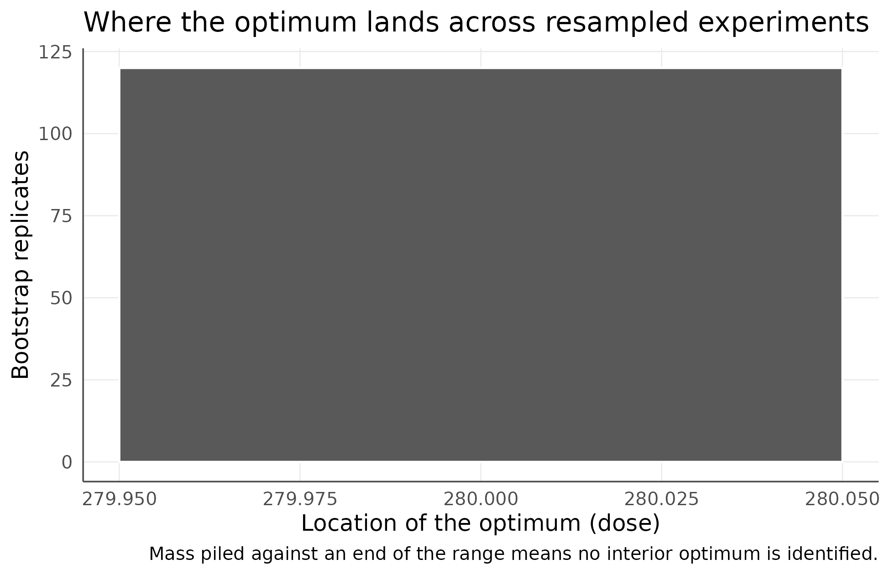
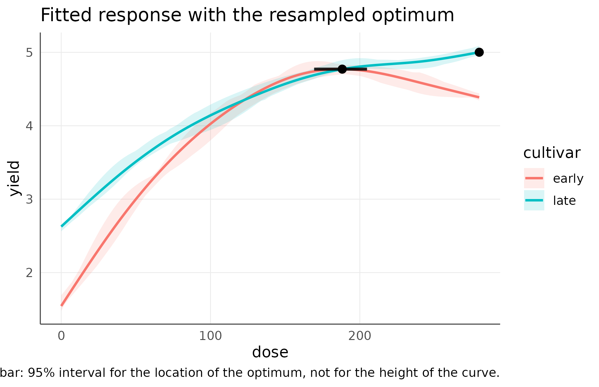
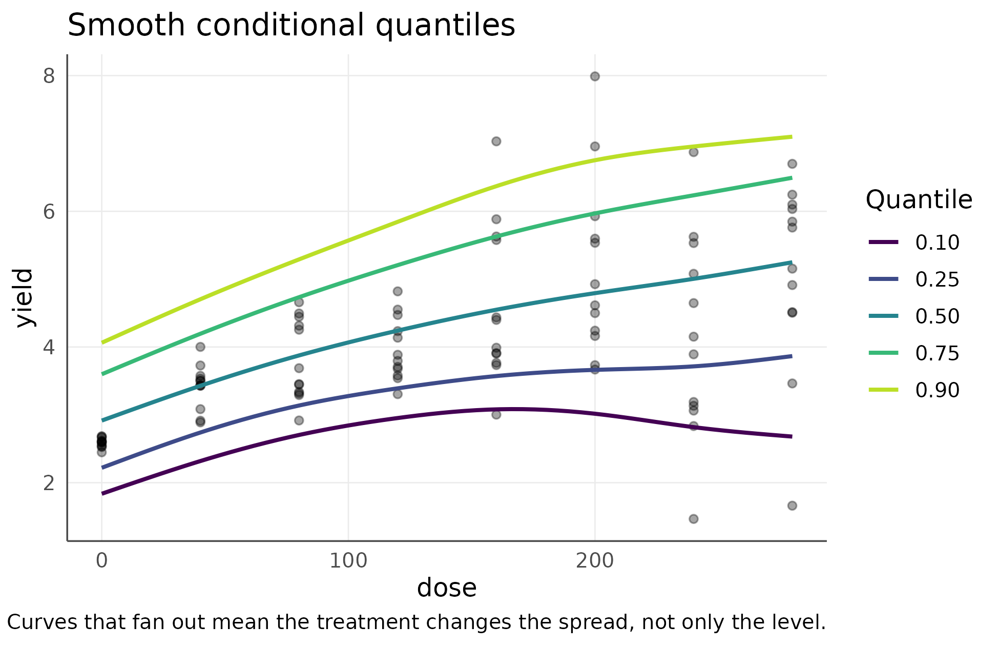
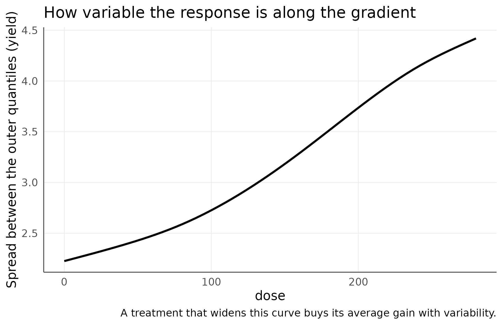
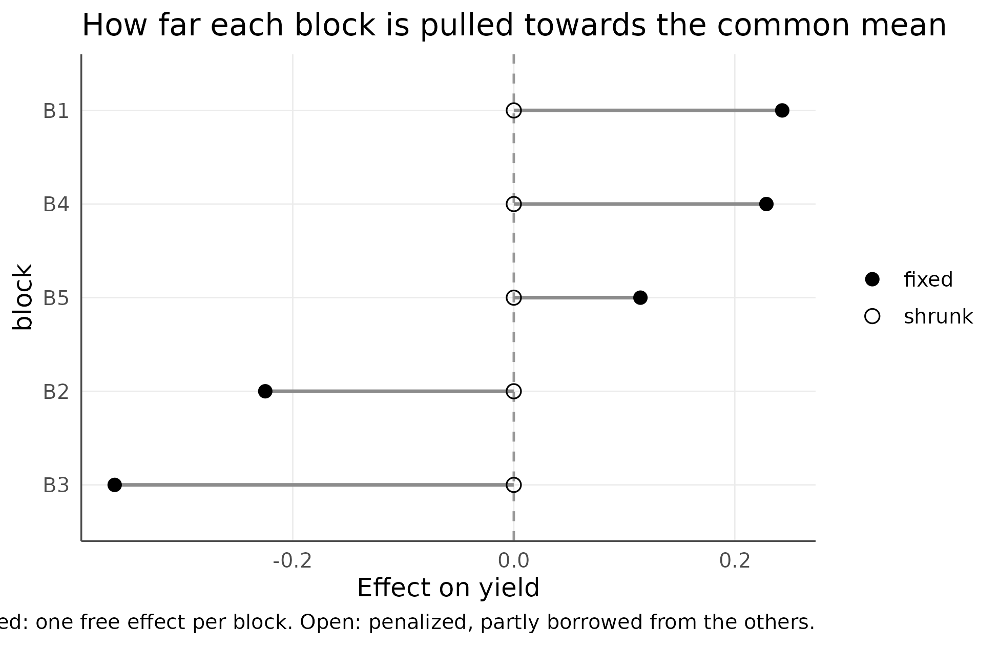

Optima, Quantiles, and How the Block Enters the Model
agriRank Development Team
Source:vignettes/v12-optima-quantiles-and-block-structure.Rmd
v12-optima-quantiles-and-block-structure.RmdRecommendation vignette Package:
agriRank Version targeted:
0.14.0 Owns: turning a fitted curve into
something a grower can act on. What rate, for whom, with what interval,
and how the declared block enters.
1. Why this vignette exists
A fitted curve is a description. A recommendation is a decision, and the gap between them is where most agronomic advice goes wrong.
Three questions have to be answered before a curve becomes advice, and none of them is answered by the curve itself:
| Question | The curve alone gives | What is needed |
|---|---|---|
| what rate | a point with no uncertainty | an interval on the location |
| for whom | the average plot | the poor plot as well |
| where | the blocks that were observed | a route to a field that was not |
A recommended rate is a location, and locations have intervals. If the location is not identified, say so rather than reporting the point.
2. Learning objectives
After working through this vignette, the reader should be able to:
- explain why resampling the argmax is harder than resampling the curve;
- read
p_boundaryandidentified, and act on them; - explain why comparing optima across additively adjusted levels is arithmetic nonsense rather than a null result;
- fit one smooth per level with
gam_structure = "varying"; - interpret a resampling p-value with the Davison and Hinkley correction;
- explain what a conditional quantile curve answers that a mean curve cannot;
- read
coverage,deviationandtracking, and abandon a quantile the experiment cannot resolve; - read the spread between outer quantiles as a statement about risk;
- distinguish a fixed block effect from a shrunk one, and say what each permits;
- report the model-based and assumption-free routes to a new field together, and know what disagreement between them means.
3. The recommendation module in one map
| Function | Answers |
|---|---|
agri_np_optimum() |
the fitted extreme, as a bare point |
agri_np_optimum_test() |
its location, with an interval and a boundary check |
agri_np_quantile_curves() |
what the poor plots do, not only the average one |
agri_np_regression(method = "smooth_quantile") |
one quantile at a time |
agri_np_regression(block_effect = "shrunk") |
a block term that can speak about a new field |
agri_np_block_effects() |
how much of the between-block spread is noise |
agri_np_conformal(scope = "new_block") |
the assumption-free route to the same claim |
4. Scope and navigation
This vignette owns the recommendation block of the regression module. Three questions belong here, and each one exposes a place where a fitted curve is routinely over-read:
- A recommended rate is a location, so what is its interval, and is there a rate to recommend at all?
- A curve through the middle of the data describes the typical plot. What describes the plot a grower actually gets in a bad year?
- A declared block can enter the model in two ways, and the choice decides whether the model can say anything about a field it never saw.
Fitting engines belong to Nonparametric and Shape-Aware Regression for Agronomic Gradients. Distribution-free uncertainty for the curve and for a future plot belongs to Distribution-Free Uncertainty and Model Checking, which this vignette leans on repeatedly. Integer decisions belong to Integer-Support Nonparametric Regression.
Everything here is nonparametric. No response function is assumed, no plateau model is fitted, and no distribution is claimed for the response.
data(agri_dose)
fit <- agri_np_regression(yield ~ dose, agri_dose, method = "gam", block = block)
fit
#> agriRank nonparametric regression
#> Method: gam
#> Response: yield
#> Predictors: dose
#> Block adjustment: block1. A rate is a location, and locations have intervals
1.1 The point estimate is not the answer
agri_np_optimum(fit)
#> predictor optimum fitted_response objective at_boundary support
#> 1 dose 280 5.035595 max TRUE continuousThat is a number with no uncertainty attached, and it sits on the upper edge of the tested range. Both facts matter, and neither is visible in the number itself.
1.2 Resampling the location, not the curve
agri_np_bootstrap() resamples the height of the
curve. agri_np_optimum_test() resamples its
argmax, which is a different and harder quantity: a curve can
be estimated precisely while the position of its maximum wanders widely,
and a plateau is exactly the shape that makes this happen.
ot <- agri_np_optimum_test(fit, B = 199, seed = 1, n = 120, external = FALSE)
#> Warning: B < 999 is a speed device for examples and vignettes; final inference
#> needs B >= 999. Silence this note with options(agriRank.quiet_small_B = TRUE).
ot
#> Location of the maximum of yield over dose
#> Resampling unit: whole levels of `block` B = 199 level = 0.95
#>
#> level n optimum lower upper fitted_response p_boundary replicates identified
#> all 40 280 280 280 5.036 1 120 FALSE
#>
#> Only 60% of replicates were usable. Resampling whole blocks
#> sometimes omits one, and a refit that never saw a block cannot predict for
#> it. Raise B to keep the same effective number of replicates.
#>
#> At least one optimum sits on the edge of the tested range in most
#> replicates, so it is not identified by these data. Report the range
#> over which the response still changes, from agri_np_significant_slope(),
#> rather than a rate.p_boundary is the share of resampled experiments whose
optimum lands on an end of the searched range. Here it is one: in every
replicate the maximum is at the boundary, so there is no interior
optimum to report and identified is FALSE.
The function says so rather than printing the boundary value as a recommendation. Compare that with the bare point estimate above, which offers 280 with no qualification at all.
plot(ot, type = "distribution")
The location of the optimum across resampled experiments. Mass piled against one end is the visual form of an unidentified optimum.
The honest report in this situation is the SiZer statement, which describes the interval over which the response is still rising rather than inventing a turning point.
agri_np_significant_slope(agri_np_sizer(fit), stability = 0.8)
#> predictor stability increase_from increase_to stops_increasing_at
#> 1 dose 0.8 0 119 126
#> decrease_from decrease_to
#> 1 NA NAB = 199 keeps the vignette fast. Use
B >= 999 for anything reported.
1.3 An experiment where the optimum does exist
To see the machinery work, the response has to turn over inside the tested range. Below, one cultivar does and the other does not.
1.4 Parallel curves cannot have different optima
The obvious model adjusts for cultivar additively. It is also the wrong one for this question, and the reason is arithmetic rather than statistical.
fit_add <- agri_np_regression(yield ~ dose + cultivar, d2, method = "gam",
block = block)
agri_np_optimum_test(fit_add, by = cultivar, B = 49)
#> Error:
#> ! The fitted curves for the levels of `cultivar` are parallel, because `cultivar` enters the model as an additive adjustment. Their optima are therefore identical by construction and comparing them would describe the model, not the experiment. Refit allowing the shape to differ, with `gam_structure = "varying"`, which fits one smooth of dose per level of cultivar.An additive adjustment shifts one curve above the other without changing its shape. Parallel curves have their maxima at the same place by construction, so a comparison of optima would report a difference of exactly zero and a p-value of one, describing the model rather than the experiment. The function refuses.
gam_structure = "varying" fits one smooth of the rate
per cultivar, so the shapes may differ:
fit2 <- agri_np_regression(yield ~ dose + cultivar, d2, method = "gam",
block = block, gam_structure = "varying")
fit2$formula_used
#> yield ~ cultivar + s(dose, by = cultivar, k = 7) + block
#> <environment: 0x55d7afe67b30>
ot2 <- agri_np_optimum_test(fit2, by = cultivar, B = 199, seed = 1, n = 120,
external = requireNamespace("npregfast", quietly = TRUE))
ot2
#> Location of the maximum of yield over dose
#> Resampling unit: whole levels of `block` B = 199 level = 0.95
#>
#> level n optimum lower upper fitted_response p_boundary replicates identified
#> early 40 188.2 169.4 204.8 4.772 0 120 TRUE
#> late 40 280.0 280.0 280.0 5.002 1 120 FALSE
#>
#> Only 60% of replicates were usable. Resampling whole blocks
#> sometimes omits one, and a refit that never saw a block cannot predict for
#> it. Raise B to keep the same effective number of replicates.
#>
#> At least one optimum sits on the edge of the tested range in most
#> replicates, so it is not identified by these data. Report the range
#> over which the response still changes, from agri_np_significant_slope(),
#> rather than a rate.
#>
#> Difference between optima, same replicate, p adjusted by holm:
#>
#> contrast difference lower upper p_value both_identified replicates
#> early - late -91.76 -110.6 -75.18 0.01653 FALSE 120
#> p_adjusted
#> 0.01653
#>
#> A contrast marked both_identified = FALSE compares an optimum
#> with a boundary artefact. Read it as a statement that the two
#> levels behave differently, not as a difference between two rates.
#>
#> Independent check, npregfast::critical():
#>
#> level optimum lower upper
#> late 280.0 213.7 NA
#> early 195.4 172.4 232.1
#> This check resamples rows and ignores the declared block, so it
#> is a comparison only. Quote the interval above.Read the table row by row. early has an interior optimum
with a usable interval. late does not, and
p_boundary says so. The contrast between them is decisive,
and the printed note explains what that contrast may and may not be
called: the two cultivars behave differently, but one side of the
difference is a boundary, not a rate.
When npregfast is installed the print also carries an
independent check. It uses different machinery and resamples rows rather
than blocks, so it is a second opinion rather than the interval to
quote; agreement is evidence and disagreement is a reason to look
closer.
plot(ot2, type = "curve")
Fitted response per cultivar with the resampled interval for the location of the optimum. The horizontal bar is uncertainty along the rate axis, not along the yield axis.
2. The typical plot and the poor plot
2.1 Why a mean curve is not enough
A treatment can raise the good plots without raising the poor ones. The mean response rises either way, and a recommendation built on it will disappoint exactly the growers whose fields resemble the poor plots.
Conditional quantiles ask the question directly. The median describes the typical plot; the tenth percentile is the exposure curve, what a grower meets in a bad year.
q10 <- agri_np_regression(yield ~ dose, agri_dose, method = "smooth_quantile",
tau = 0.10, block = block)
q50 <- agri_np_regression(yield ~ dose, agri_dose, method = "smooth_quantile",
tau = 0.50, block = block)
nd <- data.frame(dose = c(80, 160, 240),
block = factor("B3", levels = levels(agri_dose$block)))
data.frame(
dose = nd$dose,
q10 = round(as.numeric(agri_np_predict(q10, nd)), 3),
q50 = round(as.numeric(agri_np_predict(q50, nd)), 3),
gap = round(as.numeric(agri_np_predict(q50, nd)) -
as.numeric(agri_np_predict(q10, nd)), 3)
)
#> dose q10 q50 gap
#> 1 80 3.860 4.332 0.472
#> 2 160 4.608 5.049 0.441
#> 3 240 4.949 5.232 0.283Each curve is fitted by the pinball loss, which defines the quantile directly. Nothing is assumed about the shape of the response distribution, only about the smoothness of the curve.
2.2 The fan, and the replication it needs
set.seed(11)
d <- do.call(rbind, lapply(1:12, function(bk) {
z <- agri_dose[agri_dose$block == "B1", c("dose", "yield")]
z$block <- factor(paste0("B", bk), levels = paste0("B", 1:12))
z$yield <- z$yield + rnorm(nrow(z), 0, 0.10 + 0.006 * z$dose)
z
}))
nrow(d)
#> [1] 96Twelve blocks rather than five, deliberately. A tail quantile needs observations in that tail, and a 40-plot trial does not have them.
qc <- agri_np_quantile_curves(yield ~ dose, d, block = block, n = 60)
#> Warning: The most extreme quantile leaves about 9.6 observations in its tail
#> across 96 plots. The smooth borrows strength along the gradient, so the fit is
#> not driven by those observations alone, but read that curve as indicative
#> rather than as an estimate to quote.
qc
#> Smooth conditional quantiles of yield over dose
#> Quantiles: 0.10, 0.25, 0.50, 0.75, 0.90 n = 96 block = `block` (fixed)
#>
#> quantile fitted_min fitted_max range coverage deviation tracking
#> 0.10 1.837 3.085 1.248 0.02083 -0.07917 TRUE
#> 0.25 2.220 3.866 1.646 0.19792 -0.05208 TRUE
#> 0.50 2.916 5.249 2.333 0.53125 0.03125 TRUE
#> 0.75 3.599 6.495 2.896 0.81250 0.06250 TRUE
#> 0.90 4.063 7.099 3.036 0.96875 0.06875 TRUE
#>
#> `coverage` is the share of observed plots at or below each fitted
#> curve. It should sit near the quantile itself, and `deviation` is the
#> gap. This is measured on the fitting data, so it is optimistic.
#>
#> Spread between the outer quantiles: 2.226 to 4.419, widest at dose = 280Read deviation before anything else. It is the gap
between the share of plots below each fitted curve and the quantile that
curve claims to be, measured on the very data the curve was fitted to. A
quantile that misses its own target here is not a tail the experiment
can resolve, and tracking flags it.
Crossings are reported for the same reason. The quantiles are fitted independently, so a crossing is evidence that they are not separately identified at that point, and repairing it silently would hide the evidence.
plot(qc, type = "fan")
Smooth conditional quantiles. Curves that fan out mean the treatment changes the spread of yield, not only its level.
2.3 The quantity a grower is exposed to
plot(qc, type = "spread")
Distance between the outer quantiles along the gradient.
s <- qc$spread
data.frame(
dose = c(min(s$dose), s$dose[which.min(abs(s$dose - 140))], max(s$dose)),
spread = round(c(s$spread[1], s$spread[which.min(abs(s$dose - 140))],
s$spread[nrow(s)]), 3)
)
#> dose spread
#> 1 0.0000 2.226
#> 2 137.6271 3.057
#> 3 280.0000 4.419The spread widens as the rate rises. That is the finding: this treatment raises yield and raises variability together. An average gain bought with variability is a different recommendation from an average gain that lifts every plot, and only the quantile view distinguishes them.
2.4 How this relates to a prediction interval
Section 2 and the conformal interval of the previous vignette answer adjacent questions and should not be confused.
| Tool | What it describes |
|---|---|
agri_np_quantile_curves() |
where the 10th, 50th, 90th percentile plot sits at each rate |
agri_np_conformal() |
an interval that covers one future plot, with a coverage guarantee |
The quantile curves describe the shape of the conditional distribution and carry no finite-sample guarantee. The conformal interval carries the guarantee but says nothing about the shape. Reported together they are complementary.
3. How the block enters the model
3.1 Two choices, one consequence
f_fixed <- agri_np_regression(yield ~ dose, agri_dose, method = "gam",
block = block)
f_shrunk <- agri_np_regression(yield ~ dose, agri_dose, method = "gam",
block = block, block_effect = "shrunk")
data.frame(
block_effect = c("fixed", "shrunk"),
formula = c(deparse1(f_fixed$formula_used), deparse1(f_shrunk$formula_used))
)
#> block_effect formula
#> 1 fixed yield ~ s(dose, k = 7) + block
#> 2 shrunk yield ~ s(dose, k = 7) + s(block, bs = "re")Fixed estimates one free effect per block and assumes nothing about how blocks relate to each other. That is the classical choice, and its limitation is that those effects exist only for the blocks that were observed.
Shrunk replaces them with a penalized term. A block that looks extreme is pulled back towards the common mean, because part of its apparent difference is noise. This is what makes a prediction for an unobserved field possible at all.
The response curve is nonparametric under both. This argument concerns the nuisance structure, not the shape of the response.
3.2 Making the shrinkage visible
agri_np_block_effects(f_fixed)
#> Block effects on yield, block = `block`
#> Model was fitted with block_effect = "fixed"
#>
#> block n raw fixed shrunk shrinkage
#> B1 8 -0.3573 -0.3573 -0.34028 0.04757
#> B2 8 -0.3158 -0.3158 -0.30075 0.04757
#> B3 8 -0.0109 -0.0109 -0.01038 0.04757
#> B4 8 0.3247 0.3247 0.30928 0.04757
#> B5 8 0.3592 0.3592 0.34214 0.04757
#>
#> Mean shrinkage: 4.8%. The blocks genuinely differ; almost nothing is borrowed.
#>
#> Fixed effects exist only for the blocks that were observed. Shrunk
#> effects allow a prediction for a block that was not, at the price of a
#> working assumption about how blocks vary.Almost nothing moves. These blocks differ by more than noise, so the data decline to borrow between them, which is the correct behaviour and not a failure of the method.
Contrast an experiment where the blocks are noisy and their true differences small:
set.seed(3)
dn <- agri_dose
dn$yield <- dn$yield - 0.9 * (as.numeric(dn$block) - 3) * 0.35 +
rnorm(nrow(dn), 0, 0.9)
fn <- agri_np_regression(yield ~ dose, dn, method = "gam", block = block)
agri_np_block_effects(fn)
#> Block effects on yield, block = `block`
#> Model was fitted with block_effect = "fixed"
#>
#> block n raw fixed shrunk shrinkage
#> B1 8 0.2429 0.2429 2.177e-05 0.9999
#> B2 8 -0.2249 -0.2249 -2.015e-05 0.9999
#> B3 8 -0.3612 -0.3612 -3.236e-05 0.9999
#> B4 8 0.2286 0.2286 2.048e-05 0.9999
#> B5 8 0.1146 0.1146 1.027e-05 0.9999
#>
#> Mean shrinkage: 100%. Most of the apparent spread between blocks is treated as noise.
#>
#> Fixed effects exist only for the blocks that were observed. Shrunk
#> effects allow a prediction for a block that was not, at the price of a
#> working assumption about how blocks vary.
How far each block is pulled towards the common mean. Filled: one free effect per block. Open: penalized, partly borrowed from the other blocks.
The amount of travel is the amount of between-block variation the data attribute to noise. It is a property of the experiment, read off the figure rather than assumed.
3.3 Two routes to a new field, and they should be reported together
Predicting into a block that was never observed is the point where the choice bites. There are two routes, and they rest on different things.
mb <- agri_np_conformal(f_shrunk, newdata = agri_dose, level = 0.90, seed = 1,
scope = "new_block")
wb <- agri_np_conformal(f_shrunk, newdata = agri_dose, level = 0.90, seed = 1,
scope = "within_block")
data.frame(
question = c("a plot in a block we observed", "a plot in a field we did not"),
mean_width = round(c(mean(wb$upper - wb$lower), mean(mb$upper - mb$lower)), 3)
)
#> question mean_width
#> 1 a plot in a block we observed 0.910
#> 2 a plot in a field we did not 1.352The shrunk block term is the model-based route: it
borrows across blocks and so has something to say about a new one, at
the price of a working assumption about how blocks vary. The conformal
interval with scope = "new_block" is the
assumption-free route: it holds out whole blocks and
asks only for exchangeability at the block level.
They should agree. When they do not, the assumption is doing work the data do not support, and the wider of the two is the one to quote.
4. Reporting checklist
For a manuscript recommending a rate:
- the fitted curve with observed points;
-
agri_np_optimum_test(), reporting the interval for the location and the value ofp_boundary, never the bare point estimate; - if
identifiedisFALSE, theagri_np_significant_slope()statement instead of a rate; - when comparing levels, confirmation that the model lets the curve shapes differ, since parallel curves share one optimum by construction;
- the quantile fan, or at least the median and the low quantile, whenever the recommendation concerns risk rather than the average plot;
- whether the block was fixed or shrunk, and for a prediction outside the observed blocks, both routes of section 3.3;
- all resampling counts and seeds.
Every figure is a ggplot and every table a data frame,
so both can be restyled with agri_theme() or exported with
agri_save_figure().
5A. Reporting the bare point estimate
The mistake. “The optimum nitrogen rate was 280 kg/ha.”
Why it is wrong. It has no uncertainty attached, and in this experiment it sits on the boundary in every resampled replicate.
What prevents it.
agri_np_optimum_test() reports the interval on the
location, p_boundary, and identified. See
section 1.
5B. Ignoring p_boundary
The mistake. Reading the interval and skipping the boundary column.
Why it is wrong. An interval of [280, 280] looks precise. It means the extreme was pinned to the edge in every replicate, which is the opposite of precision.
What prevents it. The printed output raises an
explicit note when identified is FALSE, and
names the alternative.
5C. Comparing optima across parallel curves
The mistake. Fitting y ~ x + cultivar
and comparing the optimum of each cultivar.
Why it is wrong. An additive adjustment shifts curves without changing their shape, so the optima are identical by construction. The comparison would report a difference of exactly zero and a p-value of one, describing the model rather than the experiment.
What prevents it.
agri_np_optimum_test() detects parallel fitted curves and
refuses, pointing to gam_structure = "varying". See section
1.4.
5D. Reporting a resampling p-value of zero
The mistake. “p < 0.001” from 199 bootstrap replicates.
Why it is wrong. With B replicates the smallest attainable two-sided resampling p-value is 2/(B+1). Quoting anything smaller claims precision the resampling cannot deliver.
What prevents it. The Davison and Hinkley correction is applied automatically. See section 1.
5E. Recommending from the mean curve when risk is the question
The mistake. A single fitted curve, and a recommendation drawn from it.
Why it is wrong. A treatment can lift the good plots without lifting the poor ones. The mean rises either way, and the recommendation disappoints exactly the growers whose fields resemble the poor plots.
What prevents it.
agri_np_quantile_curves(). See section 2.
5F. Reporting a tail quantile the experiment cannot resolve
The mistake. A 10th-percentile curve from 40 plots.
Why it is wrong. Four observations sit in that tail. The curve is indicative at best.
What prevents it. coverage,
deviation and tracking check each curve
against the share of plots actually below it, and an extreme quantile is
refused outright when the tail is too thin. See section 2.2.
5G. Repairing crossing quantile curves
The mistake. Reordering or monotonising crossed quantile curves before plotting.
Why it is wrong. A crossing is evidence that the quantiles are not separately identified at that point. Repairing it hides the evidence.
What prevents it. Crossings are counted and reported, never repaired.
5H. Choosing shrunk blocks to make a table tidier
The mistake. Setting
block_effect = "shrunk" because five free block effects
clutter the output.
Why it is wrong. Shrinking imposes a working assumption about how blocks vary. It is justified when a prediction for an unobserved field is needed, not when the table is long.
What prevents it.
agri_np_block_effects() makes the amount of shrinkage
visible, so the assumption is at least inspectable. See section 3.2.
5I. Reporting only one route to a new field
The mistake. Reporting the shrunk-block prediction and omitting the conformal one, or the reverse.
Why it is wrong. They rest on different things. When they disagree, the assumption is doing work the data do not support, and only reporting both reveals it.
What prevents it. Section 3.3, and the checklist.
5J. Choose by the decision you are supporting
| The decision | Use |
|---|---|
| what rate to apply |
agri_np_optimum_test(), read identified
first |
| whether two cultivars need different rates |
gam_structure = "varying" then by =
|
| whether the gain is worth the risk |
agri_np_quantile_curves(), read
spread
|
| what a grower gets in a bad year | the low quantile curve |
| what a plot on this farm will yield | agri_np_conformal(scope = "within_block") |
| what a plot on a new farm will yield | both routes of section 3.3 |
| how much of the block spread is noise | agri_np_block_effects() |
5K. Choose the block treatment by what you must predict
| You need to predict for | block_effect |
Also report |
|---|---|---|
| the blocks you observed | "fixed" |
nothing extra |
| a field you did not observe | "shrunk" |
the conformal new_block interval too |
| nothing; the block is a nuisance | "fixed" |
it is the assumption-free default |
5L. Terms used in this vignette
| Term | Meaning here |
|---|---|
| argmax | the position at which a function attains its maximum |
| location of the optimum | the rate, as opposed to the yield at that rate |
| p_boundary | share of resampled experiments whose extreme fell on an end of the range |
| identified |
FALSE when that share reaches one half |
| parallel curves | curves differing only in height, from an additive adjustment |
| varying smooth | one smooth per level, allowing the shapes to differ |
| resampling p-value | a p-value computed from the resampling distribution |
| Davison and Hinkley correction | the added one that floors the p-value at 2/(B+1) |
| pinball loss | the loss function that defines a conditional quantile |
| exposure curve | the low quantile, describing a bad plot |
| spread | the distance between the outer quantiles at a given rate |
| tracking | whether a fitted quantile matches the share of plots below it |
| shrinkage | how far a penalized block effect is pulled towards the common mean |
| crossing | two quantile curves that swap order, indicating non-identification |
Part VIII. Where to go next
| If you now want | Read |
|---|---|
| the engines that produced the curve | Nonparametric and Shape-Aware Regression |
| where the response is still changing | Distribution-Free Uncertainty and Model Checking |
| whole-number treatments | Integer-Support Nonparametric Regression |
| the design the fit sits inside | Design Foundations, CRD, and RCBD |
| the whole workflow on one experiment | Integrated Agronomic Case Study |
References
Davison, A. C. and Hinkley, D. V. (1997). Bootstrap Methods and their Application. Cambridge University Press.
Fasiolo, M., Wood, S. N., Zaffran, M., Nedellec, R. and Goude, Y. (2021). Fast calibrated additive quantile regression. Journal of the American Statistical Association, 116(535), 1402-1412. DOI: 10.1080/01621459.2020.1725521.
Koenker, R. (2005). Quantile Regression. Cambridge University Press.
Roca-Pardinas, J., Ordonez, C. and Sperlich, S. (2017). npregfast, an R package for nonparametric estimation and inference in life sciences. Journal of Statistical Software.
Wood, S. N. (2017). Generalized Additive Models: An Introduction with R, 2nd edition. Chapman and Hall/CRC.